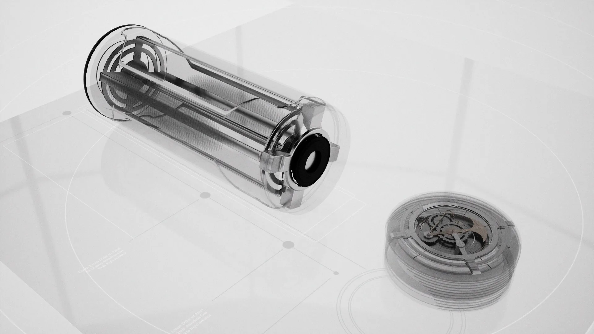
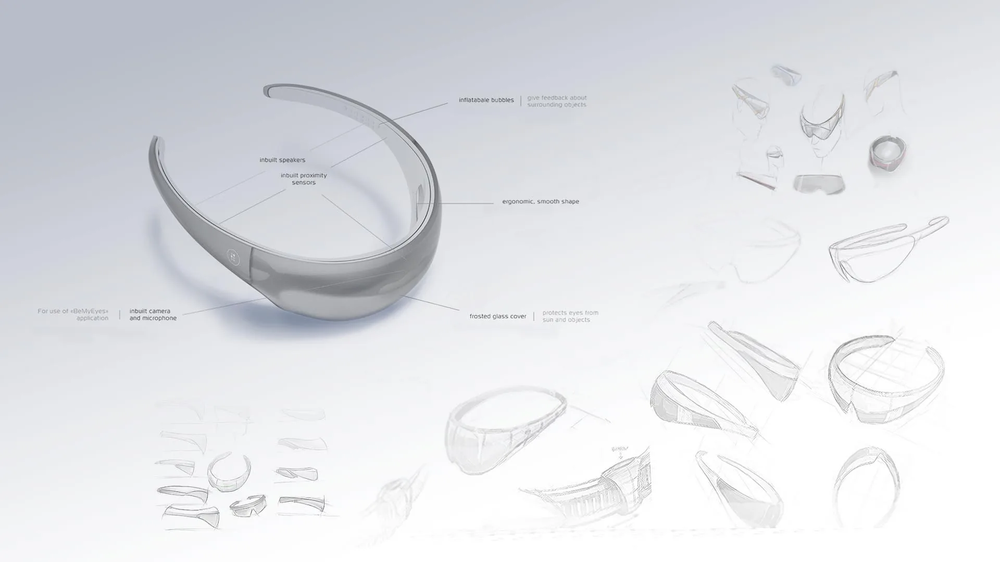
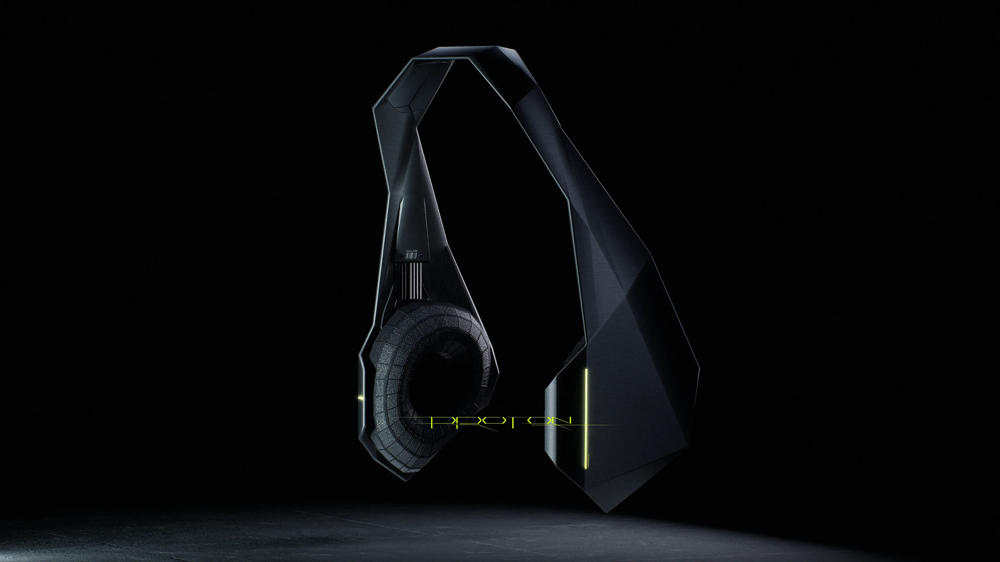
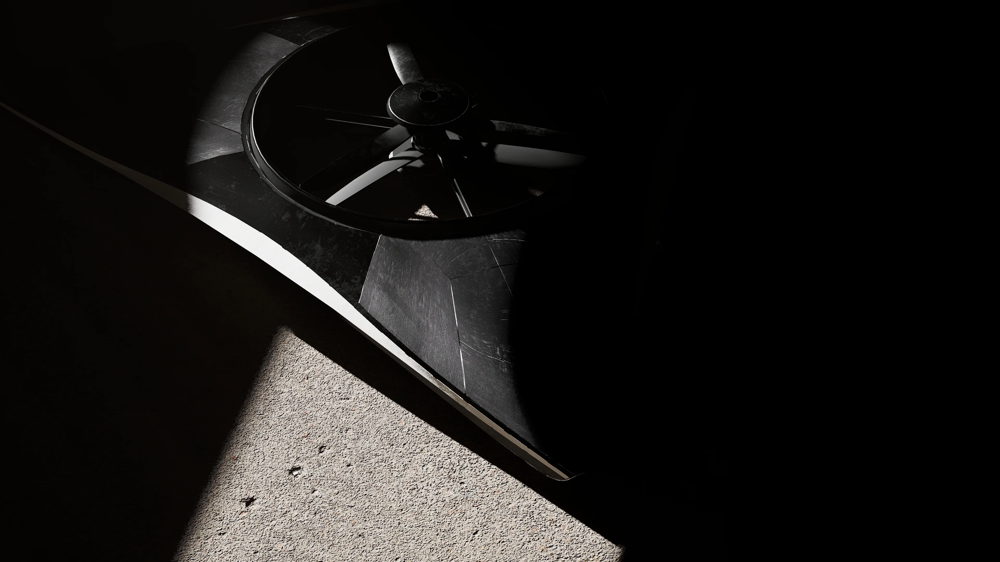

Hva er industridesign i praksis?
En kort og enkel forklaring på hva industridesign er, hvorfor det finnes, og hvordan det har utviklet seg fra håndverk til moderne produktutvikling.
Innhold
Her publiserer vi nyheter, praktiske tips, korte guider og tanker fra designarbeid i virkelige prosjekter.
En kort og enkel forklaring på hva industridesign er, hvorfor det finnes, og hvordan det har utviklet seg fra håndverk til moderne produktutvikling.

Hvorfor digital UX ofte kalles produktdesign i dag, og hvorfor industridesign fortsatt er kjernen når du lager fysiske produkter for den virkelige verden.

En praktisk oversikt over hvilke bedrifter som trenger design, hvilke faser som er viktigst, og hvordan du kan bruke designere smart i hver fase.

God design reduserer feil, returer og omarbeid. Her er hvorfor design thinking og brukerfokus gir lavere kostnader på lang sikt.

En enkel gjennomgang av de viktigste fasene, hvorfor de finnes, og hva som gjør industridesign-prosessen både strukturert og kreativ.

Har du idé, men lite kapital? Se hvordan godt design gjør det enklere å bygge tillit, vise verdi og lykkes i crowdfunding-kampanjer.